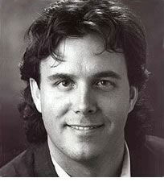

H o m e
B i o g r a p h y
W o r k s
S c h e d u l e
W r i t i n g s
C o n t a c t

Regarded as one of America's foremost proponents of new music, John Kennedy has forged a diverse musical career centered on new music performance and advocacy, through work as a composer, conductor, performer, and educator.